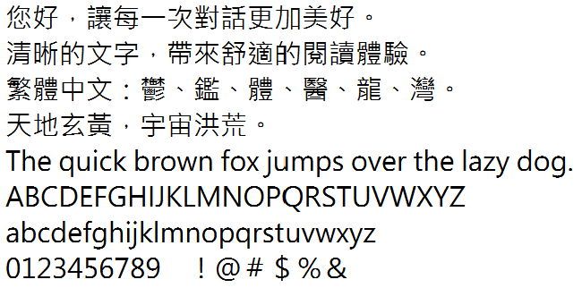
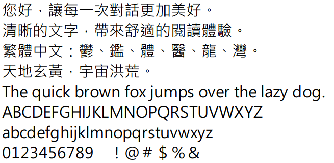
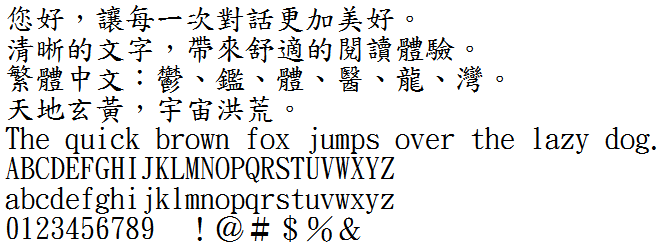
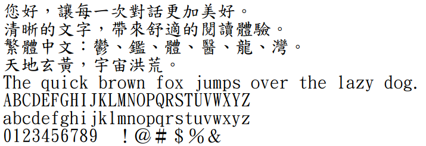
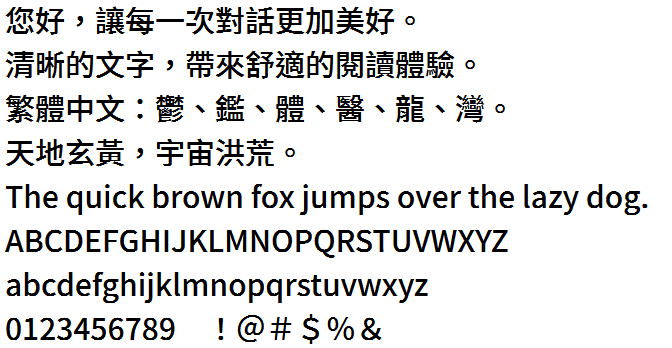

One-click enhancement
Use the FreeType font engine in compatible LINE Qt builds.
Enjoy smoother, more natural text without changing your monitor or fonts. A free utility for LINE Desktop on Windows.
Download RC5 for free ↗See real comparisonsWindows 10 / 11 x64 · 2.87 MB · Public prerelease, unsigned; app UI in Traditional Chinese
Use the FreeType font engine in compatible LINE Qt builds.
A single EXE; no extra Qt download.
Optional startup management and restore.
Five real LINE screenshots pairs, captured on Windows 11 at 200% scaling. Cropped only, no sharpening. Click any image to view original pixels. Results vary by setup.










The utility sets a Qt parameter for the LINE process, not LINE binaries or global font settings. Applying creates a local launcher and shortcut and optionally manages current-user startup entries.
QT_QPA_PLATFORM=windows:fontengine=freetypeThe EXE is unsigned. Do not disable antivirus. Review the source or verify this SHA-256 checksum.
dc17ea216d858b2a22f1e1e085922c3a007fbc3213ee73c835d90b5353b6d50cTested primarily on Windows 11 at 200% DPI. Other systems and LINE versions need verification; improvement is not guaranteed.
The app currently uses Traditional Chinese. This website offers English guidance. Localization requests are welcome.